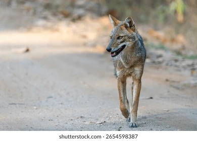

Jackals are highly intelligent animals that can adapt to deserts, forests, and grasslands, making them one of the most versatile wild canines.
Jackals are medium-sized wild canines known for their intelligence, adaptability, and excellent hunting skills. They are found in Africa, Asia, and parts of Europe, where they live alone or in small family groups.